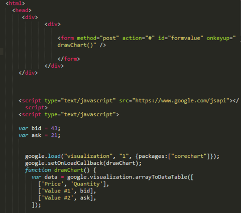

Aprende JavaScript, CSS y Bootstrap
¿JavaScript?
Se utiliza principalmente del lado del cliente, implementado como parte de un navegador web permitiendo mejoras en la interfaz de usuario y páginas web dinámicas y JavaScript del lado del servidor (Server-side JavaScript o SSJS). Su uso en aplicaciones externas a la web, por ejemplo en documentos PDF, aplicaciones de escritorio (mayoritariamente widgets) es también significativo.
Desde 2012, todos los navegadores modernos soportan completamente ECMAScript 5.1, una versión de JavaScript. Los navegadores más antiguos soportan por lo menos ECMAScript 3. La sexta edición se liberó en julio de 2015.4
JavaScript se diseñó con una sintaxis similar a C++ y Java, aunque adopta nombres y convenciones del lenguaje de programación Java. Sin embargo, Java y JavaScript tienen semánticas y propósitos diferentes. Su relación es puramente comercial, tras la compra del creador de Java (Sun Microsystems) de Netscape Navigator (creador de LiveScript) y el cambio de nombre del lenguaje de programación.
Todos los navegadores modernos interpretan el código JavaScript integrado en las páginas web. Para interactuar con una página web se provee al lenguaje JavaScript de una implementación del Document Object Model (DOM). Javascript es el único lenguaje de programación que entienden de forma nativa los navegadores.

¿CSS?
CSS está diseñado principalmente para marcar la separación del contenido del documento y la forma de presentación de este, características tales como las capas o layouts, los colores y las fuentes. Esta separación busca mejorar la accesibilidad del documento, proveer más flexibilidad y control en la especificación de características presentacionales, permitir que varios documentos HTML compartan un mismo estilo usando una sola hoja de estilos separada en un archivo .css, y reducir la complejidad y la repetición de código en la estructura del documento.

¿Bootstrap?
Bootstrap es una biblioteca multiplataforma o conjunto de herramientas de código abierto para diseño de sitios y aplicaciones web. Contiene plantillas de diseño con tipografía, formularios, botones, cuadros, menús de navegación y otros elementos de diseño basado en HTML y CSS, así como extensiones de JavaScript adicionales. A diferencia de muchos frameworks web, solo se ocupa del desarrollo front-end.
Bootstrap es el segundo proyecto más destacado en GitHub y es usado por la NASA y la MSNBC, entre otras organizaciones.